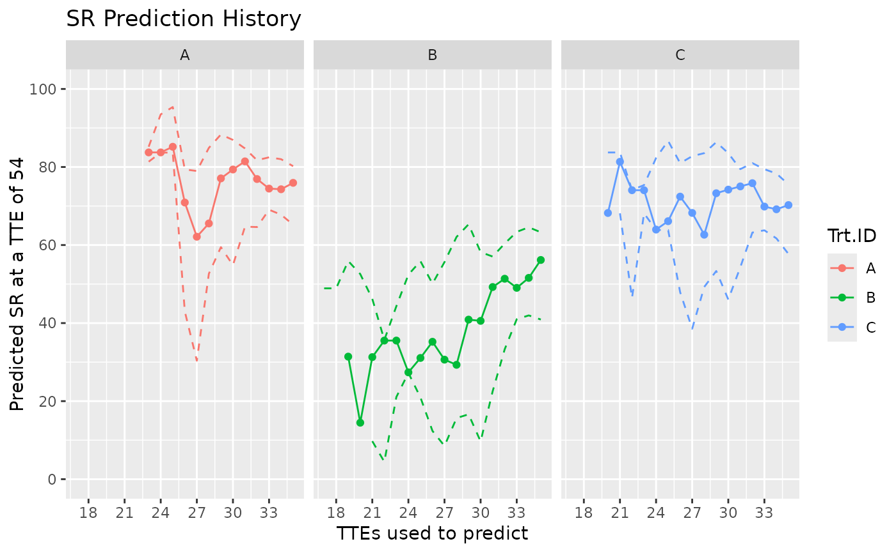
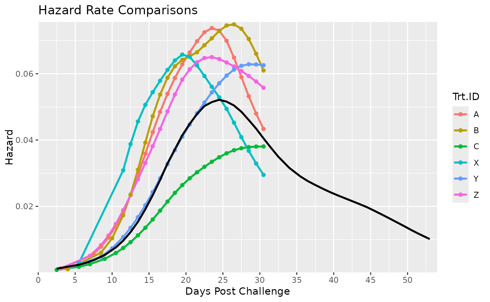
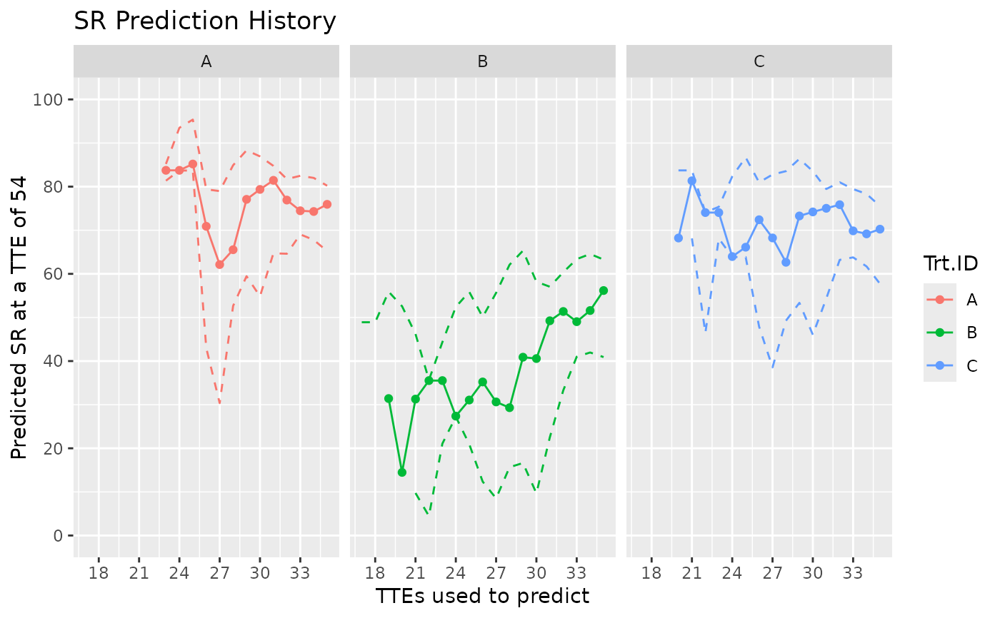
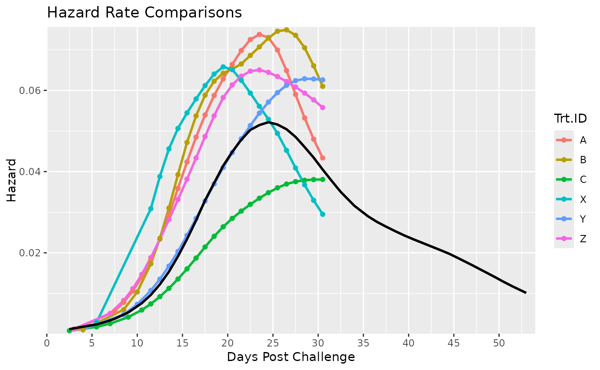

Predict future survival based on comparisons of hazard ratios to reference data. Produces tables summarizing predicted survival rate and hazard ratios for each treatment. Additionally, produces Kaplan-Meier Survival Plots and Hazard Time Curves comparing survival data (surv_db) to its reference (surv_db_ref). Further details of outputs described in Value, methods in Details.
Usage
Surv_Pred(
surv_db,
surv_db_ref,
pred_tte = NULL,
pred_method = "simple",
pred_dailybin = TRUE,
pred_phi = 1.5,
pred_lambda = NULL,
plot_save = TRUE,
plot_prefix = "ONDA_XX",
data_out = TRUE
)Arguments
- surv_db
A survival dataframe as described in
Surv_Plots(), consisting of the four columns named TTE, Status, Trt.ID and Tank.ID. Example:surv_db_exwhich is generated usingSurv_Gen().- surv_db_ref
A survival dataframe with the same column names as the supplied
surv_db. Must only have one Trt.ID which represents the reference used for prediction.- pred_tte
A numeric representing the time to event at which the survival rate is to be predicted. Defaults to NULL where the maximum TTE observed in
surv_db_refis used.- pred_method
A string representing the method used to predict survival rate. Options are "simple" or "adaptive". Methods further discussed in Details. Defaults to "simple".
- pred_dailybin
Argument ignored if both
surv_dbandsurv_db_refcontains multiple tanks. Whether to use daily (1 TTE interval) time bins in estimating hazard curves. Defaults to TRUE. Further details inSurv_Plots.- pred_phi
Argument ignored if both
surv_dbandsurv_db_refcontains multiple tanks. A numeric indicating the dispersion parameter to be used in the count model that estimates the reference hazard curve. Defaults to 1.5. Set to NULL for a data driven estimate. Further details inSurv_Plots.- pred_lambda
Argument ignored if both
surv_dbandsurv_db_refcontains multiple tanks. A numeric indicating the smoothing parameter to be used in estimating the reference hazard curve. Ignored ifpred_phiis not NULL. Defaults to NULL (data driven estimate). Further details inSurv_Plots.- plot_save
Whether to save plot outputs in the working directory. Defaults to TRUE.
- plot_prefix
A string specifying the prefix of the filename of the saved plots. Defaults to "ONDA_XX".
- data_out
Whether to output dataframes containing predicted survival rates and hazard ratios.
Value
The output is a list consisting of at least four ggplot2 objects and optionally two dataframes.
- Comp_SR_Plot
Kaplan-Meier Survival Curves of treatments in
surv_dbandsurv_db_ref, with the latter color coded black.- Comp_HR_Plot
Hazard Time Curves of treatments in
surv_dbandsurv_db_ref, with the latter color coded black.- Pred_SR_Plot
Plot of the history of predictions for survival rate based on the utilized TTEs depicted in the x-axis. For example, if the x-value is 30, this means the prediction is blind to all data after it and only utilized the TTEs before. The dashed lines indicate what the prediction would be had the TTE of
surv_db_refbeen offset by +/- 2 days. This is to show sensitivity to discrepancy in disease "starting times" (onset of significant mortality) betweensurv_dbandsurv_db_ref.- Pred_HR_Plot
Like 'Pred_SR_Plot' but with Hazard Ratio in the y-axis.
- Pred_TTE
A table showing the predicted survival rate 'pred_SR' and hazard ratio 'pred_HR' at the specified TTE (
pred_tte). All TTEs fromsurv_dbare used in the prediction.- Pred_History
A table showing the predicted survival rate and hazard ratio using various TTEs available in
surv_db.
See also
Link for executed Examples which includes any figure outputs.
Examples
# Below is a brief tutorial showing how to use Surv_Pred() to predict future survival.
# In the first step, we load the data for which survival is to be predicted and its
# reference (e.g. a past survival data involving the same disease). The reference must
# contain only one treatment group:
surv_db_ref = surv_db_ex[surv_db_ex$Trt.ID == "D",]
# For demonstration purposes, we pretend the survival data to be predicted only extends
# to 35 TTE / DPC. Survival rate at 54 TTE is to be predicted. To create such data from
# the example, I use survival::survSplit(). For real applications, creating the data
# this way would be unnecessary, instead refer to safuncs::Surv_Gen().
surv_db = survival::survSplit(data = surv_db_ex[-1,], cut = 35, end = "TTE",
event = "Status", episode = "Eps")
surv_db = surv_db[surv_db$Eps == 1 & surv_db$Trt.ID != "D",
-c(3, 6)] #remove unnecessary rows and columns
tail(surv_db, n = 5)
#> Tank.ID Trt.ID TTE Status
#> 1736 C3 C 35 0
#> 1738 C3 C 35 0
#> 1740 C3 C 35 0
#> 1742 C3 C 35 0
#> 1744 C3 C 35 0
# Next, we feed both datasets to Surv_Pred() and execute!
Surv_Pred(surv_db = surv_db,
surv_db_ref = surv_db_ref,
pred_tte = 54,
pred_method = "simple",
plot_save = FALSE,
data_out = FALSE)[-4] #exclude data output and fourth plot for now for brevity
#> Warning: The desired 'pred_tte' (54) is greater than the maximum in the reference database (52) given the TTE offset of -2. For this offset, predictions are for 'pred_tte' -2 (i.e. TTE = 52).
#> $Comp_SR_Plot
 #>
#> $Comp_HR_Plot
#>
#> $Comp_HR_Plot
 #>
#> $Pred_SR_Plot

#>
# In the first two comparative plots, the black line shows the characteristics of the
# reference group. Colored lines show treatments from surv_db.
# Notably, the third plot shows instability of the survival predictions. Using the
# latest TTE, predictions compared to actual survival at 54 TTE is 76 vs 64% (+8%) for
# Trt.A, 56 vs 64% (-8%) for Trt.B, and 70 vs 73% (-3%) for Trt.C. Notably, for Trt.B,
# predictions took ~ 2 weeks to become close to accurate. A potential culprit is the
# low(?) mortality counts that would led to an unreliable estimate of the hazard ratio
# on which the survival prediction is based on. Due to sampling variability, early
# predictions should be scrutinized.
# Next, we attempt to predict survival for an ongoing real study (at the time of
# writing). Here, predictions appeared more stable which is to some extent attributed
# to the greater mortality counts leading to more reliable hazard ratio estimates.
Surv_Pred(surv_db = surv_db_ex2, #real data with anonymized Trt.IDs
surv_db_ref = surv_db_ex3, #real past data as reference
pred_tte = 54,
pred_method = "simple",
plot_save = FALSE,
data_out = FALSE)
#> Warning: The desired 'pred_tte' (54) is greater than the maximum in the reference database (52) given the TTE offset of -2. For this offset, predictions are for 'pred_tte' -2 (i.e. TTE = 52).
#> $Comp_SR_Plot
#>
#> $Comp_HR_Plot

#>
#> $Pred_SR_Plot
#>
#> $Pred_HR_Plot
#>
#>
#> $Pred_SR_Plot

#>
# In the first two comparative plots, the black line shows the characteristics of the
# reference group. Colored lines show treatments from surv_db.
# Notably, the third plot shows instability of the survival predictions. Using the
# latest TTE, predictions compared to actual survival at 54 TTE is 76 vs 64% (+8%) for
# Trt.A, 56 vs 64% (-8%) for Trt.B, and 70 vs 73% (-3%) for Trt.C. Notably, for Trt.B,
# predictions took ~ 2 weeks to become close to accurate. A potential culprit is the
# low(?) mortality counts that would led to an unreliable estimate of the hazard ratio
# on which the survival prediction is based on. Due to sampling variability, early
# predictions should be scrutinized.
# Next, we attempt to predict survival for an ongoing real study (at the time of
# writing). Here, predictions appeared more stable which is to some extent attributed
# to the greater mortality counts leading to more reliable hazard ratio estimates.
Surv_Pred(surv_db = surv_db_ex2, #real data with anonymized Trt.IDs
surv_db_ref = surv_db_ex3, #real past data as reference
pred_tte = 54,
pred_method = "simple",
plot_save = FALSE,
data_out = FALSE)
#> Warning: The desired 'pred_tte' (54) is greater than the maximum in the reference database (52) given the TTE offset of -2. For this offset, predictions are for 'pred_tte' -2 (i.e. TTE = 52).
#> $Comp_SR_Plot
#>
#> $Comp_HR_Plot

#>
#> $Pred_SR_Plot
#>
#> $Pred_HR_Plot
#>